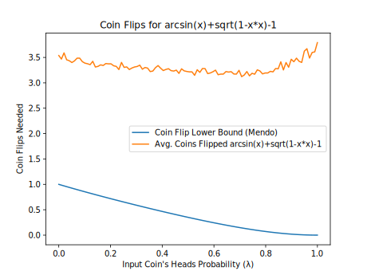
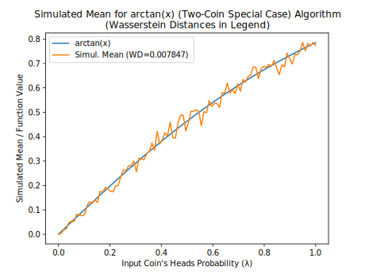
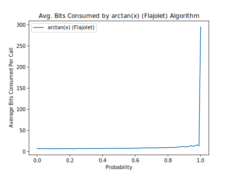
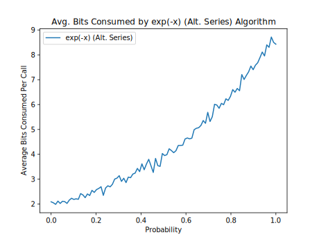
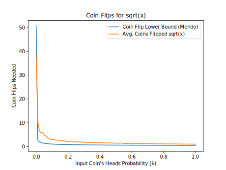
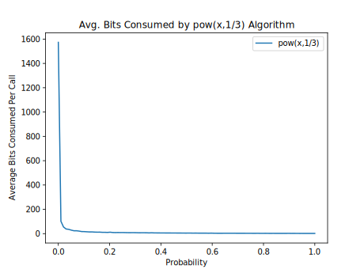
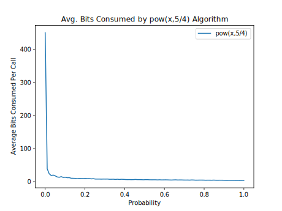
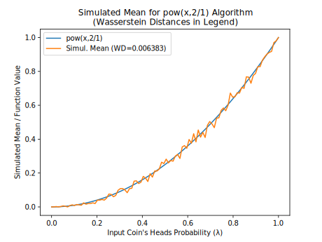
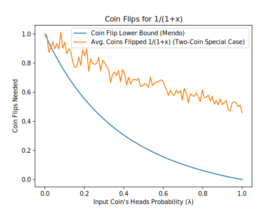
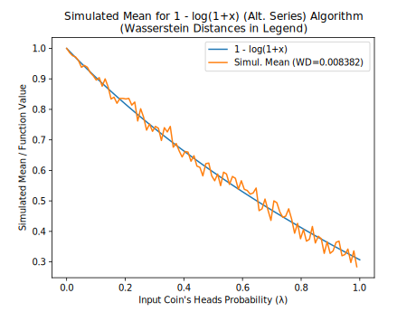

Bernoulli Factory Algorithms
Introduction
This page catalogs algorithms to turn coins biased one way into coins biased another way, also known as Bernoulli factories. Many of them were suggested in (Flajolet et al., 2010)(1), but without step-by-step instructions in many cases. This page provides these instructions to help programmers implement the Bernoulli factories they describe.
About This Document
This is an open-source document; for an updated version, see the source code or its rendering on GitHub. You can send comments on this document on the GitHub issues page. You are welcome to suggest additional Bernoulli factory algorithms.
About Bernoulli Factories
A Bernoulli factory (Keane and O'Brien 1994)(2) is an algorithm that takes an input coin (a method that returns 1, or heads, with an unknown probability, or 0, or tails, otherwise) and returns 0 or 1 with a probability that depends on the input coin's probability of heads. For example, a Bernoulli factory algorithm can take a coin that returns heads with probability λ and produce a coin that returns heads with probability exp(−λ).
A factory function is a function that relates the old probability to the new one. Its domain is [0, 1] and returns a probability in [0, 1]. There are certain requirements for factory functions. As shown by Keane and O'Brien (1994)(2), a function f can serve as a factory function if and only if f, in the interval [0, 1]—
- is continuous everywhere, and
- either returns a constant value in [0, 1] everywhere, or returns a value in [0, 1] at each of the points 0 and 1 and a value in (0, 1) at each other point.
As one example, the function f = 2*p cannot serve as a factory function, since its graph touches 1 somewhere in the open interval (0, 1).
The next section will show algorithms for a number of factory functions, allowing different kinds of probabilities to be simulated from input coins.
Algorithms
In the following algorithms:
- λ is the unknown probability of heads of the input coin.
- The SampleGeometricBag and URandLess algorithms are described in my article on partially-sampled random numbers (PSRNs).
- The
ZeroOrOnemethod should be implemented as shown in my article on random sampling methods. - The instruction to "generate a uniform random number" can be implemented by creating an empty uniform PSRN (most accurate) or by generating
RNDEXCRANGE(0, 1)orRNDINT(1000)(less accurate). - Where an algorithm says "if a is less than b", where a and b are uniform random numbers, it means to run the URandLess algorithm on the two PSRNs, or do a less-than operation on a and b, as appropriate.
- For best results, the algorithms should be implemented using exact rational arithmetic (such as
Fractionin Python orRationalin Ruby).
Performance notes:
The algorithms as described here do not always lead to the best performance. An implementation may change these algorithms as long as they produce the same results as the algorithms as described here. Some algorithms are described as "uniformly fast". This means that their average running time is bounded from above for all choices of λ and other parameters (Devroye 1986, esp. p. 717)(3).
An algorithm can be uniformly fast for all λ parameters in a closed interval in (0, 1) only if its factory function meets the Lipschitz condition on that closed interval, that is, it is continuous and has no slope that tends to a vertical slope anywhere in that interval (Nacu and Peres 2005, proposition 23)(4).
Algorithms for exp(−λ).
The algorithm in (Flajolet et al., 2010)(1) calls for generating a Poisson(λ) random number and returning 1 if that number is 0, or 0 otherwise. The Poisson generator in turn involves generating a geometric(λ) random number G(5), then G uniform random numbers, then returning G only if all G uniform numbers are sorted.(6) The algorithm follows.
- Flip the input coin until the coin returns 0. Then set G to the number of times the coin returns 1 this way.
- If G is 0, return 1.
- Generate a uniform random number w, and set i to 1.
- While i is less than G:
- Generate a uniform random number U.
- If w is less than U, break out of this loop and go to step 1.
- Add 1 to i, and set w to U.
- Return 0. (G is now a Poisson(λ) random number, but is other than 0.)
This algorithm, however, runs very slowly as λ approaches 1.
Here is an alternative version of the algorithm above, which doesn't generate a geometric random number at the outset.
- Set k and w each to 0.
- Flip the input coin. If the coin returns 0 and k is 0, return 1. Otherwise, if the coin returns 0, return 0.
- Generate a uniform random number U.
- If k > 0 and w is less than U, go to step 1.
- Set w to U, add 1 to k, and go to step 2.
In turn, this algorithm likewise converges very slowly as λ approaches 1.
A third algorithm is uniformly fast everywhere in (0, 1). It uses the reverse-time martingale approach for alternating series in (Łatuszyński et al. 2009/2011)(7) and makes use of the fact that exp(−λ) can be rewritten as 1 − λ + λ2/2 − λ3/6 + λ4/24 − ..., which is an alternating series whose coefficients are 1, 1, 1/(2!), 1/(3!), 1/(4!), ..., which satisfy the requirements for this approach because the coefficients are nonincreasing and all 1 or less. However, the algorithm requires a bit more arithmetic, notably rational division.
First, the general algorithm for the reverse-time martingale approach (called the general martingale algorithm) follows. It takes a list of coefficients and an input coin, and returns 1 with probability c[0] − c[1] * λ + c[2] * λ2 − ..., and 0 otherwise.
- Let c[0], c[1], etc. be the first, second, etc. coefficients of the alternating series. Set u to c[0], set w to 1, set l to 0, and set n to 1.
- Create an empty uniform PSRN.
- If w is not 0, flip the input coin and multiply w by the result of the flip.
- If n is even, set u to l + w * c[n]. Otherwise, set l to u + w * c[n].
- Run the URandLessThanFraction algorithm on the PSRN and l. If the algorithm returns 1, return 1.
- Run the URandLessThanFraction algorithm on the PSRN and u. If the algorithm returns 0, return 0.
- Add 1 to n and go to step 3.
For exp(−λ), modify that algorithm as follows for more efficiency:
- Rather than multiplying by c[n] in step 4, divide w by n in step 3 (after multiplying by the result of the flip). This is a more efficient way to take account of the factorial in the second and later coefficients.
Algorithm for exp(λ)*(1−λ) (Flajolet et al., 2010)(1):
- Set k and w each to 0.
- Flip the input coin. If it returns 0, return 1.
- Generate a uniform random number U.
- If k > 0 and w is less than U, return 0.
- Set w to U, add 1 to k, and go to step 2.
Algorithm for exp(−λ − c). To the best of my knowledge, I am not aware of any article or paper by others that presents this particular Bernoulli factory. In this algorithm, c is an integer that is 0 or greater.
- Run the ZeroOrOneExpMinus algorithm, described in my article on partially-sampled random numbers (PSRNs), with x = c and y = 1. Return 0 if the algorithm returns 0.
- Return the result of the algorithm for exp(−λ).
Algorithms for 1/(1+λ).
One algorithm is the general martingale algorithm, since when λ is in [0, 1], this function is an alternating series of the form 1 - x + x^2 - x^3 + ..., whose coefficients are 1, 1, 1, 1, .... However, this algorithm converges slowly when λ is very close to 1.
A second algorithm is the so-called "even-parity" construction of (Flajolet et al., 2010)(1). However, this algorithm too converges slowly when λ is very close to 1.
- Flip the input coin. If it returns 0, return 1.
- Flip the input coin. If it returns 0, return 0. Otherwise, go to step 1.
A third algorithm is a special case of the two-coin Bernoulli factory of (Gonçalves et al., 2017)(8) and is uniformly fast, unlike the previous two algorithms:
- With probability 1/2, return 1. (For example, generate an unbiased random bit and return 1 if that bit is 1.)
- Flip the input coin. If it returns 1, return 0. Otherwise, go to step 1.
Algorithm for log(1+λ) (Flajolet et al., 2010)(1):
- Create an empty uniform PSRN.
- Flip the input coin. If it returns 0, flip the coin again and return the result.
- Call the SampleGeometricBag algorithm with the PSRN. If it returns 0, flip the input coin and return the result.
- Flip the input coin. If it returns 0, return 0.
- Call the SampleGeometricBag algorithm with the PSRN. If it returns 0, return 0. Otherwise, go to step 2.
Observing that the even-parity construction used in the Flajolet paper is equivalent to the two-coin special case, which is uniformly fast for all λ parameters, the algorithm above can be made uniformly fast as follows:
- Create an empty uniform PSRN.
- With probability 1/2, flip the input coin and return the result.
- Call SampleGeometricBag on the PSRN, then flip the input coin. If the call and the flip both return 1, return 0. Otherwise, go to step 2.
A third algorithm is to invert the result of the algorithm for 1 − log(1+λ) below (make it 1 if it's 0 and vice versa).
Algorithm for 1 − log(1+λ). This algorithm uses the reverse-time martingale approach in (Łatuszyński et al. 2009/2011)(7). Here, the alternating series is 1 - x + x^2/2 - x^3/3 + ..., whose coefficients are 1, 1, 1/2, 1/3, .... Follow the general martingale algorithm, but note that this algorithm uses more bits on average as λ approaches 1.
Alternatively, invert the result of either of the algorithms for log(1+λ) (make it 1 if it's 0 and vice versa).
Algorithm for c * λ * β / (β * (c * λ + d * μ) − (β − 1) * (c + d)). This is the general two-coin algorithm of (Gonçalves et al., 2017)(8) and (Vats et al. 2020)(9). It takes two input coins that each output heads (1) with probability λ or μ, respectively. It also takes a parameter β in the interval [0, 1], which is a so-called "portkey" or early rejection parameter (when β = 1, the formula simplifies to c * λ / (c * λ + d * μ)).
- With probability β, go to step 2. Otherwise, return 0. (For example, call
ZeroOrOnewith β's numerator and denominator, and return 0 if that call returns 0, or go to step 2 otherwise.) - With probability c / (c + d), flip the λ input coin. Otherwise, flip the μ input coin. If the λ input coin returns 1, return 1. If the μ input coin returns 1, return 0. If the corresponding coin returns 0, go to step 1.
Algorithm for c * λ / (c * λ + d) or (c/d) * λ / (1 + (c/d) * λ)). This algorithm, also known as the logistic Bernoulli factory (Huber 2016)(10), (Morina et al., 2019)(11), is a special case of the two-coin algorithm above, but this time uses only one input coin.
- With probability d / (c + d), return 0.
- Flip the input coin. If the coin returns 1, return 1. Otherwise, go to step 1.
(Note that Huber specifies this Bernoulli factory in terms of a Poisson point process, which seems to require much more randomness on average.)
Algorithm for arctan(λ) /λ (Flajolet et al., 2010)(1):
- Generate an empty uniform PSRN.
- Call SampleGeometricBag twice on the PSRN, and flip the input coin twice. If any of these calls or flips returns 0, return 1.
- Call SampleGeometricBag twice on the PSRN, and flip the input coin twice. If any of these calls or flips returns 0, return 0. Otherwise, go to step 2.
Observing that the even-parity construction used in the Flajolet paper is equivalent to the two-coin special case, which is uniformly fast for all λ parameters, the algorithm above can be made uniformly fast as follows:
- Create an empty uniform PSRN.
- With probability 1/2, return 1.
- Call SampleGeometricBag twice on the PSRN, and flip the input coin twice. If all of these calls and flips return 1, return 0. Otherwise, go to step 2.
Algorithm for arctan(λ) (Flajolet et al., 2010)(1):
- Call the algorithm for arctan(λ) /λ and flip the input coin. Return 1 if the call and flip both return 1, or 0 otherwise.
Algorithm for λx/y. In the algorithm below, the case where x/y is in (0, 1) is due to recent work by Mendo (2019)(12). The algorithm works only when x/y is 0 or greater.
- If x/y is 0, return 1.
- If x/y is equal to 1, flip the input coin and return the result.
- If x/y is greater than 1, flip the input coin
floor(_x_/_y_)times and call this algorithm (once and recursively) with x/y =x/y − floor(x/y). Return 1 if all these calls and flips return 1; otherwise, return 0. - x/y is less than 1, so set i to 1.
- Flip the input coin; if it returns 1, return 1.
- Return 0 with probability x/(y*i).
- Add 1 to i and go to step 5.
Note: When x/y is less than 1, the minimum number of coin flips needed, on average, by this algorithm will grow without bound as λ approaches 0. For this case in particular, see the appendix, which also shows an alternative way to implement this and other Bernoulli factory algorithms using PSRNs, which exploits knowledge of λ but is not the focus of this article since it involves arithmetic.
Algorithm for sqrt(λ). Use the algorithm for λ1/2.
Algorithm for arcsin(λ) + sqrt(1 − λ2) − 1. (Flajolet et al., 2010)(1). The algorithm given here uses the special two-coin case rather than the even-parity construction.
- Create an empty uniform PSRN.
- Create a secondary coin μ that does the following:
- Call SampleGeometricBag twice on the PSRN, and flip the input coin twice. If all of these calls and flips return 1, return 0. Otherwise, return 1.
- Call the algorithm for μ1/2 using the secondary coin μ. If it returns 0, return 0.
- With probability 1/2, flip the input coin and return the result.
- Call SampleGeometricBag once on the PSRN, and flip the input coin once. If both the call and flip return 1, return 0. Otherwise, go to step 4.
Algorithm for arcsin(λ) / 2. The Flajolet paper doesn't explain in detail how arcsin(λ)/2 arises out of arcsin(λ) + sqrt(1 − λ2) − 1 via Bernoulli factory constructions, but here is an algorithm.(13) Note, however, that the number of input coin flips is expected to grow without bound as λ approaches 0.
- With probability 1/2, run the algorithm for arcsin(λ) + sqrt(1 − λ2) − 1 and return the result.
- Create a secondary coin μ that does the following:
- Flip the input coin twice. If both flips return 1, return 0. Otherwise, return 1.
- Call the algorithm for μ1/2 using the secondary coin μ. If it returns 0, return 1; otherwise, return 0.
Algorithms for Irrational Constants
The following algorithms generate heads with a probability equal to an irrational number. (On the other hand, probabilities that are rational constants are trivial to simulate. If fair coins are available, the ZeroOrOne method should be used. If coins with unknown bias are available, then a randomness extraction method such as the von Neumann algorithm should be used to turn them into fair coins. Randomness extraction is outside the scope of this document, however.)
Algorithm for arctan(x/y) * y/x (Flajolet et al., 2010)(1):
- Create an empty uniform PSRN.
- Generate a number that is 1 with probability x * x/(y * y), or 0 otherwise. If the number is 0, return 1.
- Call SampleGeometricBag twice on the PSRN. If either of these calls returns 0, return 1.
- Generate a number that is 1 with probability x * x/(y * y), or 0 otherwise. If the number is 0, return 0.
- Call SampleGeometricBag twice on the PSRN. If either of these calls returns 0, return 0. Otherwise, go to step 2.
Observing that the even-parity construction used in the Flajolet paper is equivalent to the two-coin special case, which is uniformly fast, the algorithm above can be made uniformly fast as follows:
- Create an empty uniform PSRN.
- With probability 1/2, return 1.
- With probability x * x/(y * y), call SampleGeometricBag twice on the PSRN. If both of these calls return 1, return 0.
- Go to step 2.
Algorithm for π / 12: Two algorithms:
- First algorithm: Use the algorithm for arcsin(1/2) / 2. Where the algorithm says to "flip the input coin", instead generate an unbiased random bit.
- Second algorithm: With probability 2/3, return 0. Otherwise, run the algorithm for π / 4 and return the result.
Algorithm for π / 4 (Flajolet et al., 2010)(1):
- Generate a random integer in the interval [0, 6), call it n.
- If n is less than 3, return the result of the algorithm for arctan(1/2) * 2. Otherwise, if n is 3, return 0. Otherwise, return the result of the algorithm for arctan(1/3) * 3.
Algorithm for 1 / π (Flajolet et al., 2010)(1):
- Generate two geometric(1/4) random numbers, and call t their sum. (As used here, a geometric(1/4) random number is the number of successes before the first failure, with success probability 1/4.)
- With probability 5/9, add 1 to t.
- Generate 2*t unbiased random bits, and return 0 if there are more zeros than ones generated this way or vice versa. (Note that this condition can be checked even before all the bits are generated this way.) Repeat this step two more times.
- Return 1.
Algorithm for (a/b)x/y. In the algorithm below, a, b, x, and y are integers, and the case where x/y is in (0, 1) is due to recent work by Mendo (2019)(12). This algorithm works only if—
- x/y is 0 or greater and a/b is in the interval [0, 1], or
- x/y is less than 0 and a/b is 1 or greater.
The algorithm follows.
- If x/y is less than 0, swap a and b, and remove the sign from x/y. If a/b is now no longer in the interval [0, 1], return an error.
- If x/y is equal to 1, return 1 with probability a/b and 0 otherwise.
- If x is 0, return 1. Otherwise, if a is 0, return 0. Otherwise, if a equals b, return 1.
- If x/y is greater than 1:
- Generate a random number that is 1 with probability ak/bk or 0 otherwise, where k = floor(x/y). (Or generate k random numbers that are 1 with probability a/b or 0 otherwise, then multiply them all.) If the number is 0, return 0.
- Otherwise, set x and y such that x/y =x/y − k.
- Set i to 1.
- With probability a/b, return 1.
- Otherwise, with probability x/(y*i), return 0.
- Add 1 to i and go to step 6.
Algorithm for exp(− x/y). This algorithm takes integers x >= 0 and y > 0 and outputs 1 with probability exp(-x/y) or 0 otherwise. It originates from (Canonne et al. 2020)(19).
- Special case: If x is 0, return 1. (This is because the probability becomes
exp(0) = 1.) - If
x > y(so x/y is greater than 1), call this algorithm (recursively)floor(x/y)times with x = y = 1 and once with x = x − floor(x/y) * y and y = y. Return 1 if all these calls return 1; otherwise, return 0. - Set r to 1 and i to 1.
- Return r with probability (y * i − x) / (y * i).
- Set r to 1 − r, add 1 to i, and go to step 4.
Algorithm for exp(− z). This algorithm is similar to the previous algorithm, except that z can be any real number 0 or greater, as long as z can be rewritten as the sum of one or more components whose fractional parts can each be simulated by a Bernoulli factory algorithm that outputs heads with probability equal to that fractional part.
More specifically:
- Decompose z into n > 0 positive components that sum to z. For example, if z = 3.5, it can be decomposed into only one component, 3.5 (whose fractional part is trivial to simulate), and if z = π, it can be decomposed into four components that are all (π / 4), which has a not-so-trivial simulation described earlier on this page.
- For each component LC[i] found this way, let LI[i] be floor(LC[i]) and let LF[i] be LC[i] − floor(LC[i]) (LC[i]'s fractional part).
The algorithm is then as follows:
- For each component LC[i], call the algorithm for exp(− LI[i]/1), and call the general martingale algorithm adapted for exp(− LF[i]). If any of these calls returns 0, return 0; otherwise, return 1. (See also (Canonne et al. 2020)(14).)
General Algorithms
Algorithm for the probability generating function. Let X be a random number that follows a discrete distribution (one that takes on a countable number of values). The following algorithm generates heads with probability E[λX], that is, the expected (average) value of λX. E[λX] is the distribution's probability generating function, also known as factorial moment generating function (Dughmi et al. 2017)(15).
- Generate a random number N of the given distribution.
- Flip the input coin until the coin returns 0 or the coin is flipped N times. Return 1 if all the coin flips, including the last, returned 1 (or if N is 0); or return 0 otherwise.
URandLessThanFraction algorithm. The following helper algorithm is used by some of the algorithms on this page. It returns 1 if a PSRN turns out to be less than a fraction, frac, which is a number in the interval [0, 1].
- If frac is 0 or 1, return 0 or 1, respectively. (The case of 1 is a degenerate case since the PSRN could, at least in theory, represent an infinite sequence of ones, making it equal to 1.)
- Set pt to 1/base, and set i to 0. (base is the base, or radix, of the PSRN's digits, such as 2 for binary or 10 for decimal.)
- Set d1 to the digit at the ith position (starting from 0) of the uniform PSRN. If there is no digit there, put a digit chosen uniformly at random at that position and set d1 to that digit.
- Set d2 to floor(frac / pt). (For example, in base 2, set d2 to 0 if frac is less than pt, or 1 otherwise.)
- If d1 is less than d2, return 1. If d1 is greater than d2, return 0.
- If frac >= pt, subtract pt from frac.
- Divide pt by base, add 1 to i, and go to step 3.
Correctness and Performance Charts
The following charts show the correctness of many of the algorithms on this page and show their performance in terms of the number of bits they use on average. For each algorithm, and for each of 100 λ values evenly spaced from 0.0001 to 0.9999:
- 500 runs of the algorithm were done. Then...
- The number of bits used by the runs were averaged, as were the return values of the runs (since the return value is either 0 or 1, the mean return value will be in the interval [0, 1]).
For each algorithm, if a single run was detected to use more than 5000 bits for a given λ, the entire data point for that λ was suppressed in the charts below.
In addition, for each algorithm, a table appears showing the minimum number of input coin flips that any fast Bernoulli factory algorithm will need on average to simulate the given function, based on work by Mendo (2019)(12). Note that some functions require a growing number of coin flips as λ approaches 0 or 1.
The Charts
| Algorithm | Simulated Mean | Average Bits Consumed | Coin Flip Lower Bound |
|---|---|---|---|
| arcsin(x)+sqrt(1-x*x)-1 |  |
 |
 |
| arcsin(x)/2 |  |
 |
 |
| arctan(x) (Two-Coin Special Case) |  |  |
 |
| arctan(x) (Flajolet) |  |
 |  |
| exp(-x) (Alt. Series) |  |
 |  |
| sqrt(x) |  |
 |
 |
| pow(x,1/3) |  |
 |  |
| pow(x,3/4) |  |
 |
|
| pow(x,4/5) |  |
 |
|
| pow(x,5/4) |  |
 |  |
| pow(x,2/1) |  |  |
 |
| pow(x,5/1) |  |
 |
 |
| exp(-x) (Flajolet) |  |
 |
 |
| exp(-x) (Alg. 2) |  |
 |
 |
| 1/(1+x) (Alt. Series) |  |
 |
 |
| 1/(1+x) (Even Parity) |  |
 |
 |
| 1/(1+x) (Two-Coin Special Case) |  |
 |
 |
| log(1+x) (Flajolet) |  |
 |
 |
| log(1+x) (Two-Coin Special Case) |  |
 |
 |
| 1 - log(1+x) (Alt. Series) |  |  |
 |
| 0.5*x/(1+0.5*x) |  |
 |
 |
| (1/3)*x/(1+(1/3)*x) |  |
 |
 |
| exp(x)*(1-x) |  |
 |
 |
Notes
(1) Flajolet, P., Pelletier, M., Soria, M., "On Buffon machines and numbers", arXiv:0906.5560v2 [math.PR], 2010.
(2) Keane, M. S., and O'Brien, G. L., "A Bernoulli factory", ACM Transactions on Modeling and Computer Simulation 4(2), 1994.
(3) Devroye, L., Non-Uniform Random Variate Generation, 1986.
(4) Nacu, Şerban, and Yuval Peres. "Fast simulation of new coins from old", The Annals of Applied Probability 15, no. 1A (2005): 93-115.
(5) As used here and in the Flajolet paper, a geometric random number is the number of successes before the first failure, where the success probability is λ.
(6) The Flajolet paper describes what it calls the von Neumann schema, which, given a permutation class and an input coin, generates a random non-negative integer n with probability equal to (λn * V(n) / n!) / EGF(λ), where EGF(λ) = Σk = 0, 1, ... (λk * V(k) / k!), and V(n) is the number of valid permutations of size n. Here, EGF(λ) is the exponential generating function. Effectively, a geometric(λ) random number G is accepted with probability V(G)/G! (where G! is the number of possible permutations of size G, or 1 if G is 0), and rejected otherwise. The probability that r geometric random numbers are rejected this way is p*(1 − p)r, where p = (1 − λ) * EGF(λ).
(7) Łatuszyński, K., Kosmidis, I., Papaspiliopoulos, O., Roberts, G.O., "Simulating events of unknown probabilities via reverse time martingales", arXiv:0907.4018v2 [stat.CO], 2009/2011.
(8) Gonçalves, F. B., Łatuszyński, K. G., Roberts, G. O. (2017). Exact Monte Carlo likelihood-based inference for jump-diffusion processes.
(9) Vats, D., Gonçalves, F. B., Łatuszyński, K. G., Roberts, G. O. Efficient Bernoulli factory MCMC for intractable likelihoods, arXiv:2004.07471v1 [stat.CO], 2020.
(10) Huber, M., "Optimal linear Bernoulli factories for small mean problems", arXiv:1507.00843v2 [math.PR], 2016
(11) Morina, G., Łatuszyński, K., et al., "From the Bernoulli Factory to a Dice Enterprise via Perfect Sampling of Markov Chains", arXiv:1912.09229v1 [math.PR], 2019.
(12) Mendo, Luis. "An asymptotically optimal Bernoulli factory for certain functions that can be expressed as power series." Stochastic Processes and their Applications 129, no. 11 (2019): 4366-4384.
(13) One of the only implementations I could find of this, if not the only, was a Haskell implementation.
(14) No note text yet.
(15) Shaddin Dughmi, Jason D. Hartline, Robert Kleinberg, and Rad Niazadeh. 2017. Bernoulli Factories and Black-Box Reductions in Mechanism Design. In Proceedings of 49th Annual ACM SIGACT Symposium on the Theory of Computing, Montreal, Canada, June 2017 (STOC’17).
(16) No note text yet.
(17) No note text yet.
(18) No note text yet.
(19) Canonne, C., Kamath, G., Steinke, T., "The Discrete Gaussian for Differential Privacy", arXiv:2004.00010v2 [cs.DS], 2020.
Appendix
Convergence of Bernoulli Factories
The following Python code illustrates how to test a Bernoulli factory algorithm for convergence to the correct probability, as well as the speed of this convergence. In this case, we are testing the Bernoulli factory algorithm of xy/z, where x is in the interval (0, 1) and y/z is greater than 0. Depending on the parameters x, y, and z, this Bernoulli factory converges faster or slower.
# Parameters for the Bernoulli factory x**(y/z) x=0.005 # x is the input coin's probability of heads y=2 z=3 # Print the desired probability print(x**(y/z)) passp = 0 failp = 0 # Set cumulative probability to 1 cumu = 1 iters=4000 for i in range(iters): # With probability x, the algorithm returns 1 (heads) prob=(x);prob*=cumu; passp+=prob; cumu-=prob # With probability (y/(z*(i+1))), the algorithm returns 0 (tails) prob=(y/(z*(i+1)));prob*=cumu; failp+=prob; cumu-=prob # Output the current probability in this iteration, # but only for the first 30 and last 30 iterations if i<30 or i>=iters-30: print(passp)
As this code shows, as x (the probability of heads of the input coin) approaches 0, the convergence rate gets slower and slower, even though the probability will eventually converge to the correct one. In fact, when y/z is less than 1:
- The average number of coin flips needed by this algorithm will grow without bound as x approaches 0, and Mendo (2019)(16) showed that this is a lower bound; that is, no Bernoulli factory algorithm can do much better without knowing more information on x.
- xy/z has a slope that tends to a vertical slope near 0, so that the so-called Lipschitz condition is not met at 0. And (Nacu and Peres 2005, propositions 10 and 23)(17) showed that the Lipschitz condition is necessary for a Bernoulli factory to have an upper bound on the average running time.
Thus, a practical implementation of this algorithm may have to switch to an alternative implementation (such as the one described in the next section) when it detects that the geometric bag's first few digits are zeros.
Alternative Implementation of Bernoulli Factories
Say we have a Bernoulli factory algorithm that takes a coin with probability of heads of p and outputs 1 with probability f(p). If this algorithm takes a geometric bag (a partially-sampled uniform random number or PSRN) as the input coin and flips that coin using SampleGeometricBag, the algorithm could instead be implemented as follows in order to return 1 with probability f(U), where U is the number represented by the geometric bag (see also (Brassard et al., 2019)(11), (Devroye 1986, p. 431)(18), (Devroye and Gravel 2015)(3)):
- Set v to 0 and k to 1.
- Set v to b * v + d, where b is the base (or radix) of the geometric bag's digits, and d is a digit chosen uniformly at random.
- Calculate an approximation of f(U) as follows:
- Set n to the number of items (sampled and unsampled digits) in the geometric bag.
- Of the first n items in the geometric bag, sample each of the unsampled digits uniformly at random. Then let uk be the geometric bag's digit expansion up to the first n digits after the point.
- Calculate the lowest and highest values of f in the interval [uk, uk + b−n], call them fmin and fmax. If abs(fmin - fmax) <= 2 * b−k, calculate (fmax + fmin) / 2 as the approximation. Otherwise, add 1 to n and go to the previous substep.
- Let pk be the approximation's digit expansion up to the k digits after the point. For example, if f(U) is π and k is 2, pk is 314.
- If pk + 1 <= v, return 0. If pk − 2 >= v, return 1. If neither is the case, add 1 to k and go to step 2.
However, the focus of this article is on algorithms that don't rely on calculations of irrational numbers, which is why this section is in the appendix.
License
Any copyright to this page is released to the Public Domain. In case this is not possible, this page is also licensed under Creative Commons Zero.